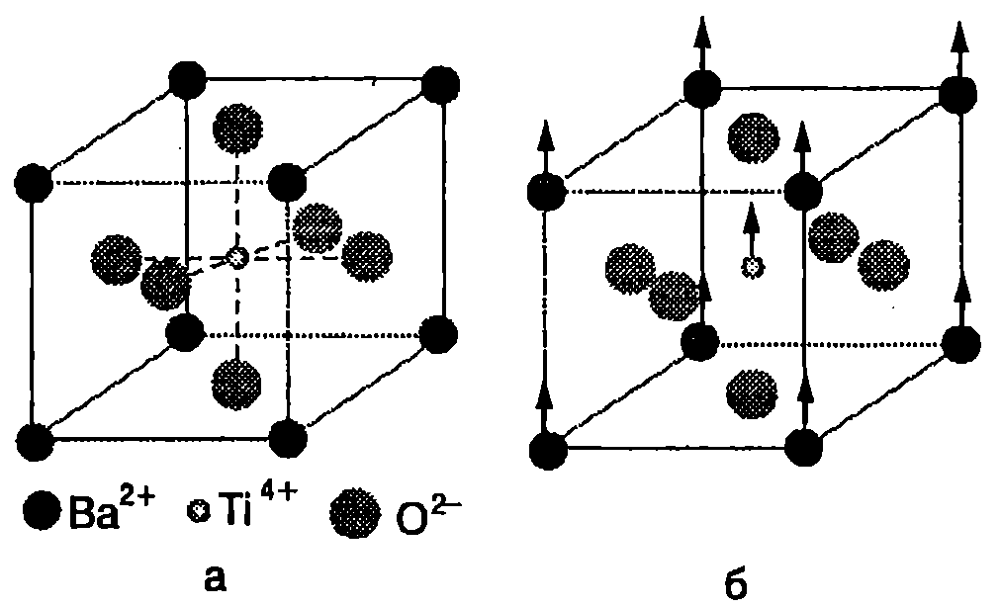

Фази
Фаза се нарича съвкупността от еднородни и еднакви по своите свойства макроскопични части от една термодинамична система, които са отделени от останалите части на системата с гранични повърхности и могат да се извлекат от нея по механичен начин. Ще поясним даденото определение с няколко примера:
-
В чаша с вода плават парчета лед. Системата е двуфазна: по механичен път парчетата лед (твърда фаза) могат да се отделят от водата (течна фаза).
-
На повърхността на чаша с вода е налят слой от олио. В случая също имаме двуфазна система. Двете течни фази (вода и олио) са разделени от гранична повърхност.
-
При мъгла малките водни капки и въздухът също образуват двуфазна система, съставена от газова и течна фаза. Всяка капчица е отделена от въздуха с гранична повърхност.
В една система може да има няколко твърди или течни фази, но само една газова фаза, тъй като всички газове се смесват помежду си. Например въздухът е еднофазна система, независимо, че представлява смес от различни газове. Две несмесващи се течности образуват двуфазна система, а смесващите се течности след разбъркване образуват еднофазна система.
Фазово равновесие
Пример за различни фази на едно и също вещество са трите му агрегатни състояния: твърдо, течно и газово. За някои кристални вещества твърдото състояние може да се реализира чрез различни кристални модификации. Това явление се нарича полиморфизъм. Например диамантът и графитът са две различни твърди фази на въглерода, които се различават една от друга по кристалната си структура. Друг пример е ледът, който има 9 полиморфни разновидности. Важна задача на термодинамиката е да установи условията, при които система, съставена от две или повече фази на едно вещество, се намира в равновесие. Фазовото равновесие включва топлинно и механично равновесие. За топлинното равновесие е необходимо всички фази от системата да имат еднаква температура. Когато две фази са разделени с плоска граница, условието за механично равновесие се свежда до изискването налягането от двете страни на границата да е еднакво. За фазовото равновесие е необходимо и още едно условие: масата на всяка една от фазите да не се променя с течение на времето, т.е. да не става превръщане на веществото от една фаза в друга фаза.
Експерименталните и теоретичните изследвания показват, че равновесие между две фази на едно вещество може да съществува само в определен температурен интервал. На всяка стойност на температурата в този интервал съответства точно определено налягане , при което равновесието е възможно. На -диаграма състоянието на равновесие между две фази се представя с линията
Доказва се, че три фази на едно вещество могат да са в равновесие само при една единствена стойност на температурата и на налягането. На -диаграмата на това равновесно състояние съответства точка с координати (), наречена тройна точка. Равновесие на повече от три фази на едно вещество изобщо не е възможно.
Фазови преходи от първи род
Преминаването на веществата от една фаза в друга се нарича фазов преход. Обикновено фазовите преходи са съпроводени с поглъщане или с отделяне на определено количество топлина, наречено скрита топлина или само топлина на прехода.
Фазови преходи, при които се отделя или се поглъща топлина, се наричат фазови преходи от първи род.
Те са свързани с промяна на обема, енергията и ентропията на веществото. Примери за фазови преходи от първи род са преходите между различните агрегатни състояние на веществото. Преходът от твърда в течна фаза се нарича топене, а обратният преход от течна в твърда фаза втвърдяване или кристализация. При нормално атмосферно налягане кристалните твърди тела се топят при точно определена температура, наречена температура на топене. Аморфните твърди тела, например стъклото и асфалта, нямат определена температура на топене. При нагряване те се размекват и постепенно преминават в течно състояние.
Количеството топлина, необходимо за разтопяването на единица маса от кристално вещество, нагрято до температурата на топене, се нарича специфична топлина на топене . От определението следва, че тяло с маса трябва да погълне количество топлина
за да се разтопи. Съгласно със закона за запазване на енергията обратният процес на кристализация е съпроводен с отделяне на същото количество топлина, каквото се поглъща при топенето.
Преминаването на веществото от течна в газова фаза се нарича изпарение или парообразуване. Количеството топлина, необходимо за изпарение на единица маса от веществото, се нарича специфична топлина на изпарение (парообразуване) . Необходимото количество топлина за изпаряване на килограма от веществото е
Пример 41.1
Пресметнете изменението на ентропията при разтапянето на 0,5 kg лед, намиращ се при температура 0 °C. Специфичната топлина на топене на леда е J/kg. \end{psexample}
Решение
Ще разглеждаме топенето на леда като равновесен процес, протичащ при постоянна температура К, при който термодинамичната система поглъща количество топлина . Нарастването на ентропията е
Фазови преходи от втори род
При фазовите преходи от първи род става скокообразно изменение на състоянието на веществото. Например, ако се нагрее до температурата на топене, кристал преминава скокообразно от твърдо в течно състояние. При полиморфните превръщания в точката на фазовия преход веществото преминава от една кристална модификация в друга, т.е. става скокообразно изменение в симетрията на подреждане на атомите в кристала. Характерно за фазовите преходи от I род е, че в точката на прехода двете фази съществуват едновременно, намират се в равновесие помежду си и имат различни свойства.
Съществуват и друг вид фазови преходи, при които измененията в състоянието на веществото се извършват постепенно (плавно), а не скокообразно. Например при високи температури кристалът BaTiO има кубична структура, като във върховете на елементарния куб (Фиг. \ref{fig:41.1}) са разположени йони на бария (Ba), в средата на стените йони на кислорода (O), а в центъра на куба йони на титана (Ti). Когато температурата намалява и достигне определена стойност , йоните Ba и Ti започват да се изместват спрямо йоните на кислорода O в направление на едно от ребрата на куба и се променя симетрията на кристала: кубът се деформира. Такива плавни изменения в структурата на кристала се наричат фазов преход от втори род. При температурата на фазовия преход кубът не е деформиран и нискотемпературната фаза на бариевия титанат съвпада с кубичната високотемпературна фаза.

Фазов преход от втори род. а) Високотемпературната фаза на бариевия титанат е кубична: във върховете на куба са разположени йоните Ba$^{2+
```$, в центъра на стените на куба - йоните O$^{2-}$, а йонът Ti$^{4+}$ е в центъра на куба. б) Под температурата на фазовия преход структурата леко се деформира: йоните Ba$^2$+ и Ti$^{4+}$ се отместват спрямо йоните на кислорода O$^{2-}$.}
`Фиг. 41.1`
Друг пример за фазов преход от втори род е преминаването на някои вещества от парамагнитно във феромагнитно състояние. В случая кристалната структура не се променя, а стават само изменения в разположението на елементарните магнитни моментите преминават от по-неподредено състояние (високотемпературна парамагнитната фаза) в по-подредено състояние (нискотемпературна феромагнитна фаза). Преходът на някои метали, сплави и керамики в свръхпроводящо състояние също е фазов преход от втори род. При него стават изменения само в електронната система на веществото в свръхпроводящо състояние тя е ``по-подредена''.
За разлика от фазовите преходи от първи род, преходите от втори род не са свързани с поглъщане или отделяне на топлина. В точката на прехода не се изменят също така обемът, вътрешната енергия и ентропията. Фазовите преходи от втори род обикновено са съпроводени само със скокообразни изменения на топлинните капацитети и на коефициентите на топлинно разширение.
> [!question] Пример 41.2
>
При ниски температури топлинният капацитет $C_n$ на металите е пропорционален на абсолютната температура $T: C_n=aT$. Ако металът премине в свръхпроводящо състояние, зависимостта става: $C_s = bT^3$ ($a$ и $b$ са константи). Докажете, че в точката на фазовия преход $T_k$ топлинният коефициент търпи скок $\Delta C = C_s - C_n = 2aT_k$.
\end{psexample}
> [!note]- Решение
>
От данните в условието на задачата можем да определим зависимостта на ентропията $S$ на метала от температурата във високотемпературната ($n$ -- нормална) фаза и в нискотемпературната ($S$ -- свръхпроводяща) фаза. От определението за топлинен капацитет $C_n = \delta Q/dT$ и от уравнението на втория принцип на термодинамиката $\delta Q = TdS_n$, следва, че: $C_n = aT = TdS_n/dT$. След непосредствено интегриране получаваме: $S_n = aT$. Аналогично: $C_s = bT^3 = TdS_s/dT$, откъдето след интегриране получаваме: $S_s = bT^3/3$.
В точката на фазовия преход от втори род ентропията не се изменя, т.е. $S_n (T_k) = S_s(T_k)$ или $aT_k = bT_k^3/3$. От последното равенство намираме връзката между коефициентите $a$ и $b$:
$$b = \frac{3a}{T_k^2}.$$
Търсеният скок в топлинния капацитет на метала при фазовия преход от втори род нормален метал-свръхпроводник е
$$\Delta C = C_s - C_n = \left(\frac{3a}{T_k^2}\right) T_k^3 - aT_k = 2aT_k$$
**Задачи**
1. Течният хелий има много ниска температура на кипене 4,2 К (при нормално атмосферно налягане) и много малка специфична топлина на парообразуване $r = 2,\!1.10^4$ J/kg (около 100 пъти по-малка от тази на водата). За да се сведе до минимум топлообменът с околната среда, течният хелий се съхранява в специални съдове, чиято външна част се охлажда от течен азот. Пресметнете загубите на течен хелий поради изпарението за едно денонощие, ако хелият в съда получава при топлообмена с околната среда постоянна топлинна мощност 0,2 W.
2. За разтапяне на топка от мокър сняг е необходимо два пъти по-малко количество топлина, отколкото за стопяване на парче лед със същата маса, чиято начална температура е -10 °C. Колко процента е водата в снежната топка? Специфичният топлинен капацитет на леда е 2100 J/(kg-K), а специфичната му топлина на топене е 333 kJ/kg.
3. Пресметнете изменението на ентропията на 2 kg алуминий, който се втвърдява при постоянна температура 660 °C (температура на топене и на втвърдяване на алуминия). Специфичната топлина на топене на алуминия е $4.10^5$ J/kg.
4. Айсберг с маса $10^{10}$ kg е носен от течението Гълфстрийм, температурата на чиято вода в 22 °C. Температурата на леда е 0°C. ) Колко в максималният възможен КПД на топлинна машина, която използва водата на течението за нагревател, а айсбергът за охладител?
6) Колко механична работа ще извърши такава машина, докато айсбергът се разтопи? Специфичната топлина на топене на леда в $3,\!33.10^5$ J/kg.